- Detects the vehicle's longitudinal and lateral acceleration.
- Detects the vehicle's yaw rate.
| Last Modified: 10-07-2025 | 6.11:8.1.0 | Doc ID: NM100000002GFQD |
| Model Year Start: 2024 | Model: Tacoma | Prod Date Range: [12/2023 - ] |
| Title: AL80E (AUTOMATIC TRANSMISSION / TRANSAXLE): AUTOMATIC TRANSMISSION SYSTEM: AUTOMATIC TRANSMISSION CONTROL; 2024 - 2026 MY Tacoma [12/2023 - ] | ||
AUTOMATIC TRANSMISSION CONTROL
FUNCTION OF MAIN COMPONENTS
|
Component |
Function |
|
|---|---|---|
|
*1: Models with drive mode select
*2: Models with tow haul mode select *3: Models with stop and start system |
||
|
Solenoid Valve SL1 |
Controls the No. 1 clutch (C1) pressure. |
|
|
Solenoid Valve SL2 |
Controls the No. 2 clutch (C2) pressure. |
|
|
Solenoid Valve SL3 |
Controls the No. 3 clutch (C3) pressure. |
|
|
Solenoid Valve SL4 |
Controls the No. 4 clutch (C4) pressure. |
|
|
Solenoid Valve SL5 |
Controls the No. 1 brake (B1) pressure. |
|
|
Solenoid Valve SL6 |
Controls the No. 2 brake (B2) pressure. |
|
|
Solenoid Valve SC3 |
Switches the No. 2 B2 apply control valve. |
|
|
Solenoid Valve SLT |
Controls the line pressure. |
|
|
Solenoid Valve SLU |
Controls the lock-up clutch pressure. |
|
|
Solenoid Valve SL |
Switches the lock-up relay valve. |
|
|
Transmission Revolution Sensor (NT) |
Detects the input speed of the transmission. |
|
|
Transmission Revolution Sensor (SP2) |
Detects the output speed of the transmission. |
|
|
No. 1 ATF Temperature Sensor |
Detects the ATF temperature. |
|
|
No. 2 ATF Temperature Sensor |
||
|
Airbag ECU (Airbag ECU Assembly) |
Yawrate Sensor |
|
|
Accelerator Pedal Rod with Sensor Assembly |
Detects the accelerator pedal opening angle. |
|
|
Stop Light Switch Assembly |
Detects the brake pedal depressing signal. |
|
|
Park/Neutral Position Switch Assembly |
Detects the shift lever position (P, R, N, D). |
|
|
Transmission Floor Shift Assembly |
Transmission Control Switch |
|
|
Integration Control and Panel Assembly |
DRIVE MODE Switch*1 |
Switches the driving mode select on and off. |
|
TOW HAUL Switch*2 |
Switches tow haul mode select on and off. |
|
|
MODE SELECT Switch |
|
|
|
Combination Meter Assembly |
MIL |
Illuminates or blinks to inform the driver when the ECM detects a malfunction. |
|
Multi-information Display |
|
|
|
Buzzer |
|
|
|
ECM |
Controls engine output in response to signals from the transmission control ECU assembly. |
|
|
Transmission Control ECU Assembly |
|
|
|
Brake Actuator Assembly
|
Sends information about the operation conditions of the brake control system to the ECM. |
|
|
Forward Recognition Camera |
Sends acceleration and deceleration request signals to the ECM. |
|
|
Electromagnetic Oil Pump (Oil Pump Assembly with Solenoid (EMOP))*3 |
Holds the AT oil pressure during idle stop. |
|
SYSTEM CONTROL
(a) The AL80E 8-speed automatic transmission uses the following controls.
|
Control |
Outline |
|---|---|
|
Shift Timing Control |
Performs shifting control according to the shift position, vehicle speed, accelerator opening angle and driving conditions. |
|
Clutch to Clutch Pressure Control |
Uses the shift solenoid valves to directly control the clutch and brake, making it possible to achieve a compact transmission and perform high-precision shifting control. |
|
Line Pressure Optimal Control |
Actuates line pressure control solenoid valve SLT to control the line pressure in accordance with information from the ECM and transmission control ECU, and the operating conditions of the transmission. |
|
Lock-up Control |
|
|
Powertrain Cooperative Control |
Controls both shift control and engine output control in an integrated way, achieving excellent shift characteristics and drivability. |
|
Artificial Intelligence Shift Control (AI-shift Control) |
Based on the signals from various sensors, the ECM and transmission control ECU determines the road conditions and the intention of the driver. Thus, an appropriate shift pattern is automatically determined, improving drivability. |
|
S Mode Control |
Uses gear hold control, high response upshift control, blipping downshift control and complete lock-up control to improve the response and feel of manual operations, providing driving pleasure during sporty driving. |
|
Drive Mode Select |
Makes it possible to select the driving mode by performing switch operations. |
|
Fail-safe |
If a malfunction is detected in the sensors or solenoids, the transmission control ECU and ECM performs fail-safe control to prevent vehicle drivability from being significantly affected. |
|
Diagnosis |
When the transmission control ECU or ECM detects a malfunction, the transmission control ECU and ECM records the malfunction and memorizes the information that relates to the fault. |
(b) Clutch Pressure Control
(1) The transmission control ECU monitors the signals from various types of sensors, such as the transmission revolution sensor (NT) and transmission revolution sensor (NC), allowing the linear solenoid valves SLT, SL1, SL2, SL3, SL4, SL5, SL6 and SLU to precisely control the clutch pressure in accordance with engine output and driving conditions. As a result, the transmission has smooth shift characteristics.
(c) Clutch-to-Clutch Pressure Control
(1) Clutch-to-Clutch pressure control is used for shift control. As a result, shift control in 1st gear or above is possible without using a one-way clutch, making the automatic transmission lightweight and compact.
(2) Using the fluid pressure circuit, which enables the clutches and brakes (C1, C2, C3, C4, B1 and B2) to be controlled independently, and the high flow SL1, SL2, SL3, SL4, SL5, and SL6 linear solenoid valves, which directly control the clutch pressure, the transmission control ECU controls each clutch and brake accordingly with the optimum fluid pressures and timings in accordance with the information transmitted by the sensors, and then shifts the gears. As a result, the transmission has highly responsive and excellent shift characteristics.
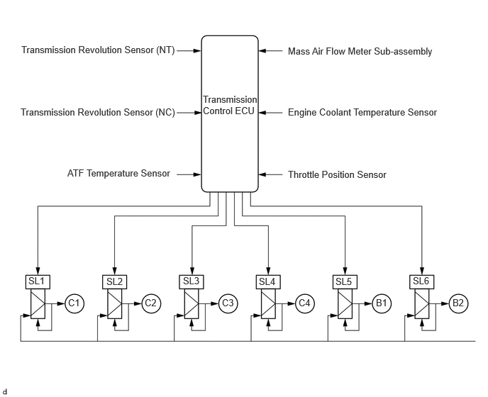(d) Line Pressure Control
(1) The line pressure is controlled using line pressure control solenoid SLT.
(2) Through the use of line pressure control solenoid SLT, the line pressure is optimally controlled in accordance with the engine torque information, as well as with the internal operating conditions of the torque converter clutch assembly and the automatic transmission assembly.
(3) Accordingly, the line pressure can be accurately controlled in accordance with the engine output, traveling condition, and the ATF temperature, thus realizing smooth shift characteristics and optimizing the workload of the oil pump (reducing parasitic losses).
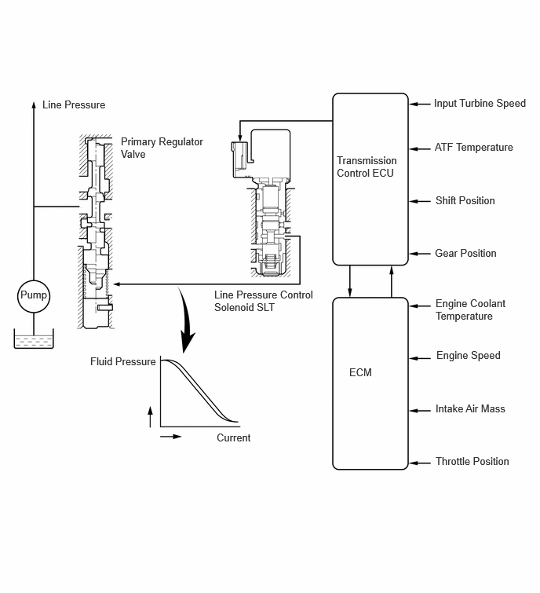(e) All Range Lock-up
(1) Compared to the previous model, the AL80E performs lock-up control at lower speeds as well as at higher opening angles, enabling direct transmission of power similar to a manual transmission. Furthermore, the increased rate of engagement contributes to improved fuel efficiency.
(2) By increasing the lock-up range, and suppressing engine revving, smooth driving with high responsiveness and linearity is realized.
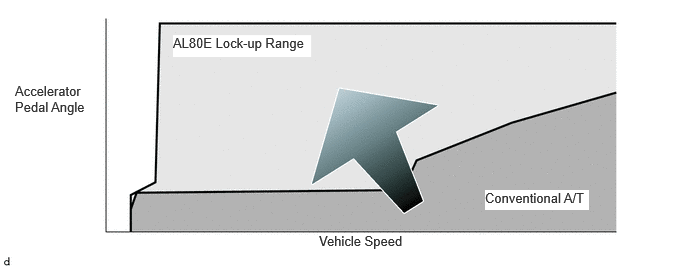 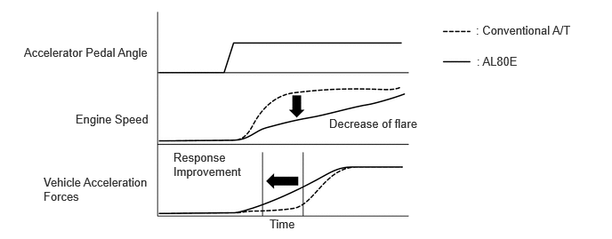(3) With previous automatic transmission, lock-up was cancelled when downshifting to avoid shift shock, but with a torque converter adopting a multiple disc lock-up clutch as well as precision control taking into account transient characteristics of engine torque and hydraulic pressure, it has become possible to maintain lock-up continuously.
(4) In 1st gear and the low engine speed regions of 2nd and higher gears, lock-up is not performed, and the torque converter function is employed to realize smooth driving.
|
Gear Position |
Shift Position |
|---|---|
|
D, S |
|
|
○: Operates
X: Does not operate *: Except at low engine speed range |
|
|
1st |
X |
|
2nd |
○*(During acceleration) |
|
3rd |
○* |
|
4th |
○* |
|
5th |
○* |
|
6th |
○* |
|
7th |
○* |
|
8th |
○* |
(f) Powertrain Cooperative Control
(1) At low accelerator opening angles, the highly efficient low engine speed ranges are aggressively employed, contributing to improved fuel efficiency and reduced noise.
(2) Previous driving force characteristics were dependent on the torque characteristics of the engine electronic throttle opening angle and the gear ratio at each gear speed level. To achieve the driver's target driving force, the new control system uses an independent engine torque request for each gear, realizing increased fuel efficiency and drivability.
(3) At low accelerator opening angle ranges, highly efficient engine ranges are aggressively employed, realizing increased fuel efficiency. At the same time the differences between target driving forces at each gear level are small, enabling smooth downshift without noticeable driving force change.
(4) When the accelerator is deeply depressed to accelerate, the target driving force is set to be directly linked to the engine speed change, resulting in a direct and energetic feeling of acceleration, with the goal of achieving high balance of fuel efficiency and drivability.
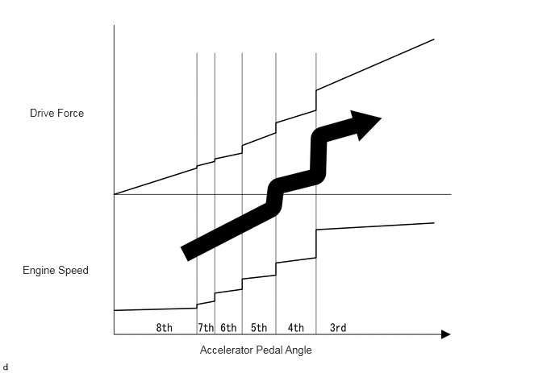(g) Artificial Intelligence Shift Control (AI-shift Control)
(1) The automatic transmission gear is determined by the shift pattern, which uses the vehicle speed and throttle valve opening angle.
(2) Additionally, AI-shift control enables the ECM and transmission control ECU to estimate the road conditions and the driver's intention in order to automatically control the shift pattern in the optimal manner. As a result, a comfortable ride has been achieved.
(3) The AI-shift control includes road condition support control and driver's intention support control.
(4) The AI-shift control determines optimal transmission control based on input signals and automatically changes the shift pattern.
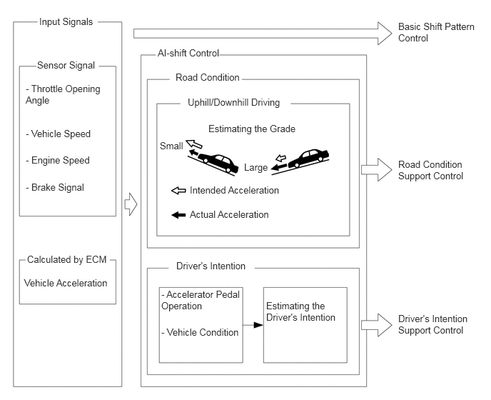(5) Road Condition Support Control
- Under road condition support control, the ECM determines the throttle opening angle and the vehicle speed in addition to whether the vehicle is being driven uphill or downhill. To achieve optimal drive force while driving uphill, this control prevents unnecessary upshifts. To achieve the optimal engine braking while driving downhill, this control automatically performs downshifts. 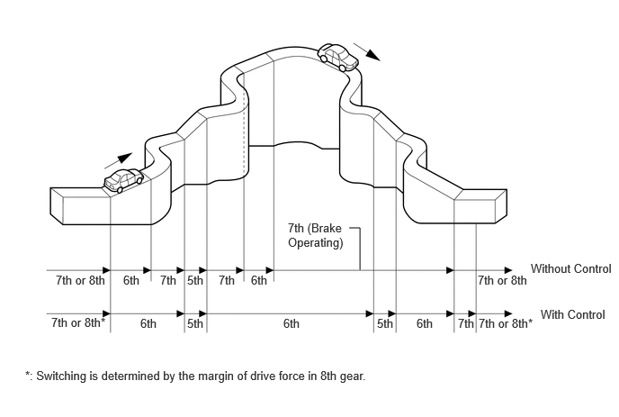
(6) Driver's Intention Support Control
- Driver intention support control predicts the driver's intentions according to accelerator pedal operations and the vehicle condition and switches to a comfortable shift pattern that is appropriate for the driver without requiring any switch operations. 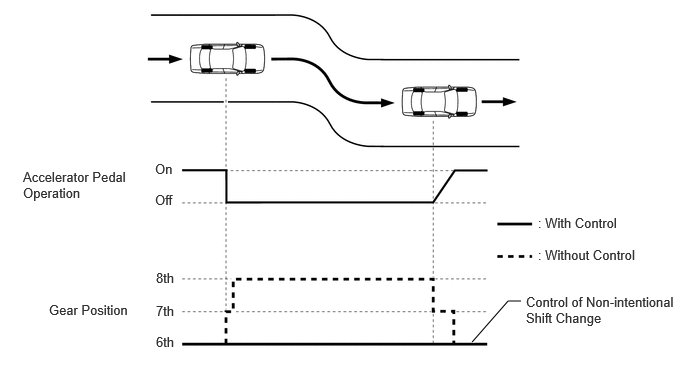
(7) Driver Intention/Driving Scene Support Control
- Driver intention/driving scene support control selects the optimal gear position according to the driver's intentions and the driving scene at that point in time.
- When the driver is driving in a relaxed manner, a high gear position is selected to emphasize fuel efficiency.
- When the driver is driving in a sporty manner, a low gear position is selected to emphasize drive force and responsiveness.
- Even if the driver has the D range selected while
sporty driving is performed on winding roads and race
tracks, shifting is performed using a shift pattern
that makes it feel like gear positions are being
selected manually, achieving a high-speed responsive
drive.
HINT:
Driver intention/driving scene support control will be canceled when ECO mode is selected.
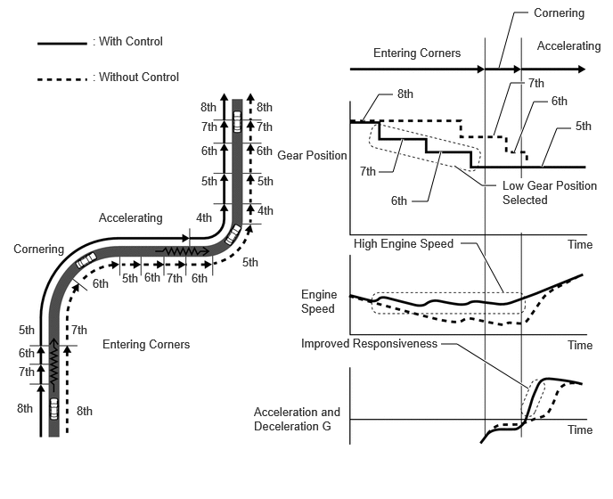
FUNCTION
(a) Drive Mode Select (Models with Drive Mode Select)
- This function automatically switches the
powertrain control mode between the 3 types selected
by drive mode select operations: "NORMAL", "ECO" and
"SPORT".
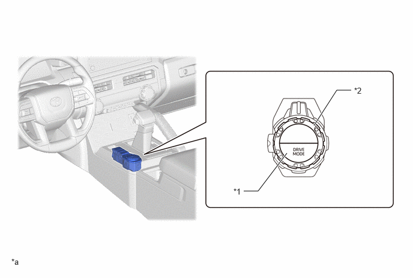Drive Mode
Powertrain Control Mode
Outline
NORMAL
Normal
Ensures fuel economy and drivability when driving in the city, but when driving on winding roads, selects the optimal gear position to provide a more enjoyable driving experience.
ECO
Eco
Gradually adjusts the throttle characteristics to assist the driver with eco driving.
SPORT
Power
Performs control suitable for sporty driving by improving the acceleration response by controlling the transmission and engine and also improving the steering feeling.
*1
DRIVE MODE Switch
*2
MODE SELECT Switch
*a
The illustrations shown are examples only.
-
-
(b) Tow Haul Mode Select (Models with Tow Haul Mode Select)
- When TOW/HAUL is selected, the ECM and
transmission control ECU controls the engine output,
transmission shift schedule, shift timing and
steering map to ensure drivability when a trailer is
towed.
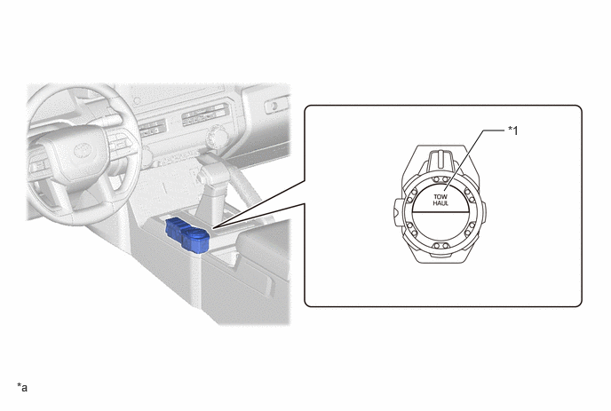Mode
Outline
TOW/HAUL
When TOW/HAUL is selected, the ECM and transmission control ECU controls the engine output, transmission shift schedule and shift timing according to the driver's request to increase output, in order to ensure drivability when a trailer is towed.
*1
TOW HAUL Switch
-
-
*a
The illustrations shown are examples only.
-
-
FAIL-SAFE
- The fail-safe function minimizes the loss of operability when an abnormality occurs in a sensor or a solenoid valve.
- For details, refer to the Repair Manual.
DIAGNOSIS
- When the ECM or transmission control ECU detects a malfunction, it makes a diagnosis and memorizes the failed section. Furthermore, the ECM illuminates or blinks the MIL in the combination meter assembly to inform the driver.
- The ECM will also store the Diagnostic Trouble Codes (DTCs) of the malfunctions.
- The DTCs can be read by connecting the GTS to the DLC3.
- For details, refer to the Repair Manual.